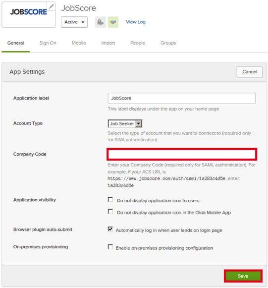
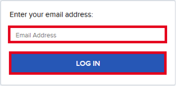

https://support.jobscore.com/hc/en-us/articles/204158279-How-can-my-company-integrate-using-SAML
Email support@jobscore.com and request that they enable SAML 2.0 for your account.
Provide the following information:
Your Company Name.
Identity Provider = OKTA
IDP Metadata: Copy and paste the following information:
The JobScore Support team will process your request and provide you with a Company Code.
In Okta, open the General tab for the JobScore app, then enter the Company Code provided to you by JobScore:

Click Save.
Done!
Notes:
SP-initiated flows, IdP-initiated flows, and Just In Time (JIT) provisioning are all supported.
For SP-initiated Flows:
Open the SSO Login page, here: https://www.jobscore.com/login/sso.
Enter your Email Address, then click LOG IN:
